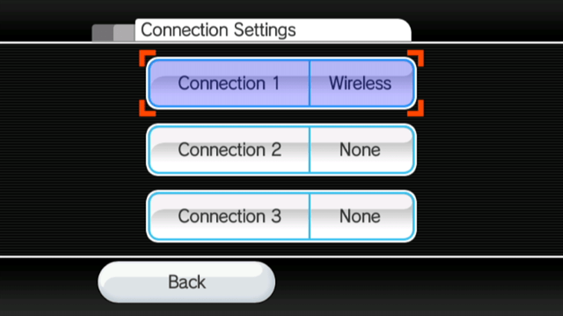

str2hax
Si necesitas ayuda con cualquier cosa en este tutorial, por favor entras el servidor Discord de RiiConnect24 (recomendado) o envia un correo electronico a [email protected].
Ten en cuenta que si tu ISP (proveedor de servicios de internet) o entorno de red evitan el uso de DNS alternativos, str2hax no funcionará y tendrás que usar otro exploit.
str2hax es un exploit para el Wii que se activa al cargar el Contrato de Uso. Lo único que se requiere es una conexión a internet que te permita cambiar los ajustes de DNS en tu Wii.
Requisitos
- Un Wii con conexión a la Internet
Instrucciones
Sección I - Cambiando los ajustes de internet
Este exploit requiere que cambies tu configuración de DNS para poder conectarte al servidor que contiene el exploit.
- Selecciona
Opciones de Wiien el menú de Wii.
- Selecciona
Configuración de Wii.
- Pasa a la segunda página y después selecciona
Internet.
- Selecciona
Ajustes de conexión.
- Selecciona tu conexión actual. 
- Selecciona
Modificar.
- Pasa hasta la cuarta página, donde está la opción
Obtener DNS automáticamente(no es en Obtener drección IP automáticamente), eligeNoy después seleccionaConfiguración avanzada.
- Escriba
18.188.135.9como DNS primario. - Escriba
18.188.135.9como DNS secundario. - Selecciona
Confirmary después eligeGuardar.
- Selecciona
Aceptarpara realizar una prueba de conexión.
- Si la prueba de conexión ha sido exitosa, elige
Nopara saltar la actualización de la consola Wii.
- Si ha fallado, entonces por favor usa otro exploit.
- Si la prueba de conexión ha sido exitosa, elige
Sección II - Activando el exploit
- Ve hacia la sección
Internet, seleccionaDocumentos legales/Contactoy eligeSí. - Si en pantalla aparece un poni en un fondo azul, entonces todo ha salido bien. Espera de uno a dos minutos para que se active el exploit (debería tardar alrededor de 1 minuto y 25 segundos). El exploit descargará el HackMii Installer para que puedes empezar con la modificación de tu consola.
Si el HackMii Installer no se carga y la consola se congela (si no puedes mover el cursor) o si han pasado más de dos minutos, por favor reinicia tu Wii y vuelve a ejecutar el exploit.
Si ha instalado un mod como CTGP Revolution o Project+, str2hax puede cargarlo en su lugar. If it does, restart your Wii and try again without your SD card inserted.
Continuar a la instalación del Canal Homebrew y BootMii